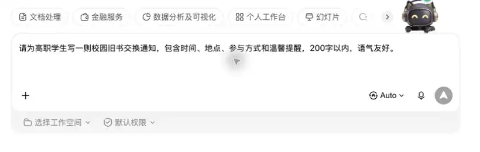

把一个生活或学习任务拆成：AI 可以协助、人必须确认、不能交给 AI 的信息。
- 示例：社团招新文案可由 AI 起草
- 必须确认：时间、地点、报名链接
- 不能上传：同学真实电话和身份证信息
第一章｜AIGC 理论基础 · 第 1 次课 · 2 学时
从生活中的 AI 出发，学会判断什么任务适合交给 AI，什么地方必须由人负责。
课程首次课，暂无上一课知识回顾。
板块 ② 本节你将学会
把一个生活或学习任务拆成：AI 可以协助、人必须确认、不能交给 AI 的信息。
围绕“校园活动通知”，写清背景、提示词、检查动作和交付文件。
文件示例：01_校园活动通知_姓名.docx
更擅长识别、分类和预测，例如人脸解锁、垃圾邮件过滤。
能根据要求生成文字、图片、音频和代码，例如写文案、画海报草图、整理提纲。
AI 负责起草、整理、提供选项；人负责目标、事实核验、隐私与最终决定。
从“按规则办事”到“根据要求生成内容”，AI 的能力是在不断叠加的。
其中“人工核验”不能省：检查事实、隐私、版权、格式和是否真正解决了任务。
可以理解为读过大量文字材料的“语言学习助手”。它会根据上下文预测更合适的表达，但不等于真正理解或记住所有事实。
训练像长期学习大量样例；推理像上课时根据学到的规律回答新问题。我们平时使用工具，主要是在进行推理。
同一个 AI 能处理不只一种内容：文字、图片、语音、视频等。例如上传图片后让它写商品介绍，就是多模态任务。
就是 AI 当前能“看到”的前后材料。任务背景、对象、格式要求写得越清楚，回答通常越贴近你的需要。
AI 处理文字时会把内容切成小片段，不完全按一个汉字或一个词计算。材料太长时，旧内容可能无法被完整参考。
AI 可能说得很像真的，却给出错误、过时或没有出处的信息。这不是故意骗人，而是需要你查来源、做核验的原因。
“把班级同学的联系方式上传给 AI，让它自动发通知”——这件事可以直接做吗？和同桌说出你的理由。
核心案例｜校园旧书交换通知
从“想用 AI 写通知”到“得到可发布的初稿”小芸要为班级旧书交换活动写通知，但只记得“下周、图书馆附近、每人带一本书”。她想让 AI 先写一版，自己再补齐真实信息。
AI 能把已知信息整理成通知；对象、时间、地点和参与方式越清楚，初稿越能用。没给出的信息不能让 AI 猜。
“文字写得像通知”不等于“通知能发布”。AI 不知道活动是否真的举行、地点是否临时更换，也不能代替小芸确认。 >
用 AI 起草一则通知，并用“时间、地点、参与方式、隐私”四项检查它能否使用。
01_旧书交换任务单_姓名.docx
任务一｜制作 AI 任务边界卡
背景： 你准备为班级活动写一则通知，希望借助 AI 提高效率。
我的检查句：发布前，我会核对活动信息是否准确，并删除不必要的个人信息。
交付物： 一张任务边界卡照片或截图。
命名： 01_AI任务边界卡_姓名.png
任务二｜完成可执行任务单
背景： 为“校园旧书交换”活动生成一则通知初稿。
请为高职学生写一则校园旧书交换通知，包含时间、地点、参与方式和温馨提醒，200
字以内，语气友好。交付物： 通知初稿 + 四项检查记录。
命名： 01_旧书交换任务单_姓名.docx

电商用 AI 起草商品标题，客服用 AI 整理常见问题，设计师用 AI 生成配图灵感；发布前仍由人检查事实、品牌规范和版权风险。
下一节课《AI 是怎么“想”的：从输入到输出》：学习如何把模糊想法写成清楚的提示词。